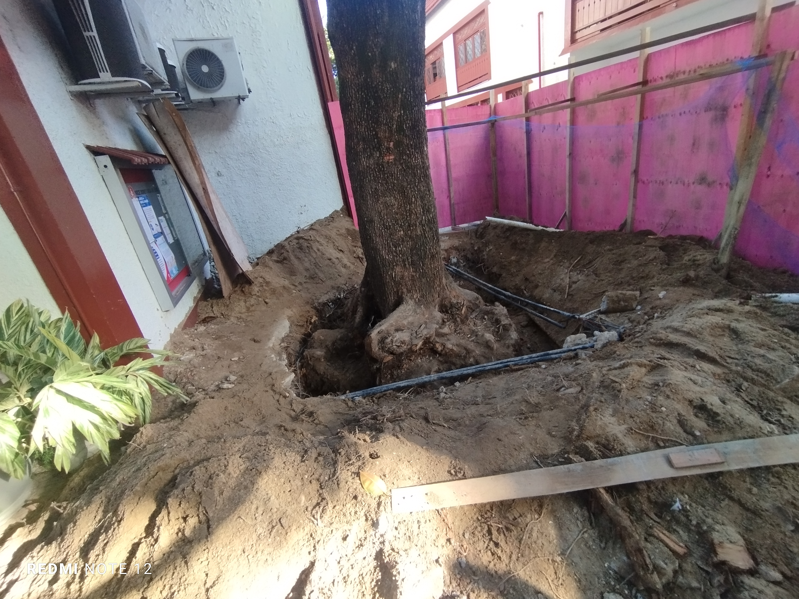

Manutenções em Andamento

Remoção de Árvore
Informamos que a árvore localizada ao lado do CPD (Centro de Processamento de Dados) está sendo removida por motivos técnicos e de segurança.O processo de remoção será realizado no prazo de até 30 dias.